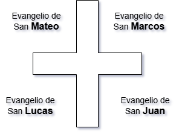
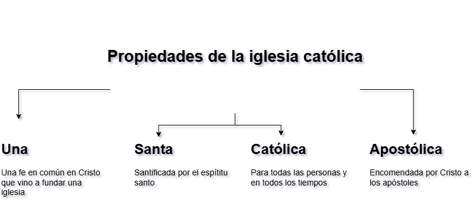

Jesús el Mesías
Sesión 1: Identifiquemos el mensaje y las características.
Propósito: Comprendemos los elementos escenciales del mensaje del evangelio.
¿Qué es el evangelio?
Es el mensaje de la buena nueva de Dios, hacia el hombre caído, el cual consiste principalmente en el anuncio del perdón de los pecados, de la obra vicaria de Jesucristo, terminos de paz y reconciliación.
El evangelio es considerado una oferta de perdón
Elementos escenciales del mensaje del evangelio
La frase "Murió por nuestros pecados". Como nos dice Romanos carítulo 3 -23 "Por cuantos todos pecaron estan destituidos de la gloria de DIos" La realidad del pecado necesita ser reconocida.
Asumimos la importancia trascendente de la biblia en la celebración
Propósito: la importancia en la eucaristía en nuestras vidas.
- Sacramento de la fe católica.
- consagración del pan y el vino en el cuerpo y sangre de Jesucristo.
- Acción instituida en la última cena por Jesús
Lecturas de la eucaristía en misa:
La razón principal porque las lecturas de la mlisa vienen de la biblia y sólo de la bibilia es por la unidad que tiene la celebración eucaristica. sabemos que las lecturas de la lmisa tienen 2 partes:
- Liturgia de la palabra
- Liturgia de la eucaristía
Jeremías 18:7- 8
Reflexión: Es dejar el mal y no hacer daño, dejar los problemas, el rencor y hacer el bien sinn hacerle daño a nadie.
Mas ellos cambian su proceder dejando la maldad que se denunciaba. Entonces yo también quiero cambiar mis proyectos y ya no les quiero causar ningún mal.

La lectura del a palabra
Es la primera parte de la misa.
Primera lectura
Tomada del antiguo testamento
Salmo responsorial
Meditación por canto
Segunda lectura
Pertenece al nuevo testamento
Evangelio
Tomada de los evangelistas.
Homilía
Explicación del padre.
Sesión 03: Catecismo de la iglesia católica
Concepto:Es un libro de contenidos escenciales y fundamentos de la doctrina católica.
El catecismo tiene 4 pilares y son:
- La profesión de la fe , el misterio cristiano (credo)
- Los sacramentos de la fe, los 7 sacramentos(lo que celebro)
- La vida de la fe, los 10 mandamientos(lo que vivo)
- La oración en la vida de la fe, la creación del padre nuestro(lo que oro).
Lee y reflexiona:
Marcos 16:16
Los que son bautizados serán salvados.
Mateo 16:18
Los poderes de la muerte jamás serán vencidos y también que sobre esa piedra edificarán la iglesia.
Juan 20:23
Que todos debemos soltar nuestros pecados para ser libres.

- La iglesia de nuesstros tiempos es una comunidad universal
- Los que son bautizados se incorporan a la iglesia única de Jesucristo
- La iglesia les comunica y guía por la fe y les dice como podrían vivir.
Mateo 17:20
Habla sobre la poca fe que tenemos, y si tuviéramos fe sería del tamaño de un granito de mostaza.
Marcos 9:23
Todo es posible para las persona que tenemos fe.
Mateo 28:9
Bautiza a todos los pueblos en el nombre del padre, hijo y espíritu santo para qu sean discícpulos.
Sesión 4: Los sacramentos: Puertas hacia la gracia divina.
Propósito:Comprendemos y experimentamos el amor, la gracia y la salvación.
¿Qué es un sacramento?
Los sacramentos son signos sensibles y eficaces de la gracia de Dios, instituídos por Jesucristo para fortalecer la fe de los creyentes.
¿Por qué son 7 sacramentos?
Porque corresponden a la etapas vitales del ser humano sobre todo espirituales y estáb diseñados para acompañar a creyente, fortalecer su fe y guiarlo hacia la salvación.
Los 7 sacramentos son
Sacramentos de iniciación cristiana:
- Bautizo: Nos hace hijos de Dios y miembros de la iglesia por medio del agua.
- Confirmación: Fortalece nuestra fe con la acción del espíritu santo.
- Eucaristía: Recibimos el cuerpo y sangre de Cristo.
Sacramentos de curación:
- Reconciliación: Recibimos el perdón de Dios.
- Unción de los enfermos: Brinda fortaleza espiritual y consuelo.
Sacramentos de ayuda humanitaria:
- Orden sacerdotal: Consagra a algunos hombrespara servir a la iglesia.
- Matrimonio: Une a un hombre y a una mujer a una alianza de amor y fidelidad.
Tarea:Pega símbolos de los sacramentos.